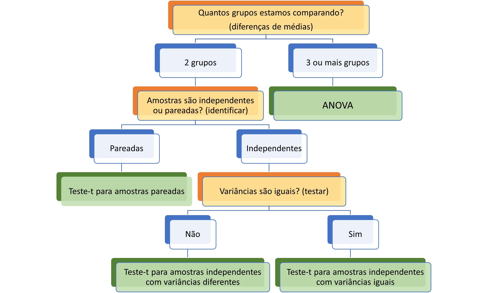
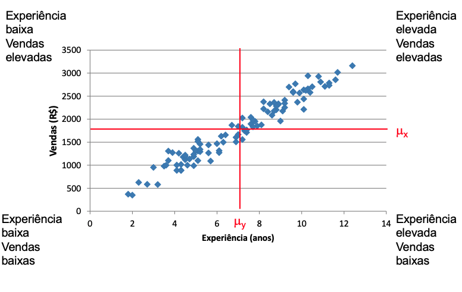

media faltas turma idade
Min. :40.00 Min. : 0.00 Length:60 Min. :18.00
1st Qu.:70.00 1st Qu.: 2.00 Class :character 1st Qu.:19.75
Median :73.75 Median : 4.00 Mode :character Median :22.00
Mean :74.38 Mean : 4.25 Mean :25.23
3rd Qu.:80.00 3rd Qu.: 6.00 3rd Qu.:29.00
Max. :95.00 Max. :10.00 Max. :49.00
interess tempocup escola estcivil
Secundário:24 não tem : 4 Tudo privada :20 Casado :17
Principal :34 até 2h : 3 Maior parte privada:15 Solteiro:42
NA's : 2 de 2h a 4h:11 Maior parte pública:18 NA's : 1
de 4h a 6h:42 Tudo pública : 7
+ de 6h : 0
nota1 nota2 dif perfil_faltas
Min. :37.00 Min. :43.00 Min. : 0.000 Length:60
1st Qu.:68.88 1st Qu.:71.75 1st Qu.: 2.000 Class :character
Median :71.75 Median :77.25 Median : 6.000 Mode :character
Mean :71.84 Mean :76.91 Mean : 5.067
3rd Qu.:77.00 3rd Qu.:83.00 3rd Qu.: 8.000
Max. :93.00 Max. :98.00 Max. :10.000
perfil_estudos
Length:60
Class :character
Mode :character
Testes de hipótese na prática
Métodos Quantitativos Aplicados à Ciência Política
Frederico Bertholini
Conheça seus dados
Lembrando a base de trabalho
Lembrando a base de trabalho
media faltas turma idade
Min. :40.00 Min. : 0.00 Length:60 Min. :18.00
1st Qu.:70.00 1st Qu.: 2.00 Class :character 1st Qu.:19.75
Median :73.75 Median : 4.00 Mode :character Median :22.00
Mean :74.38 Mean : 4.25 Mean :25.23
3rd Qu.:80.00 3rd Qu.: 6.00 3rd Qu.:29.00
Max. :95.00 Max. :10.00 Max. :49.00
interess tempocup escola estcivil
Secundário:24 não tem : 4 Tudo privada :20 Casado :17
Principal :34 até 2h : 3 Maior parte privada:15 Solteiro:42
NA's : 2 de 2h a 4h:11 Maior parte pública:18 NA's : 1
de 4h a 6h:42 Tudo pública : 7
+ de 6h : 0
nota1 nota2 dif perfil_faltas
Min. :37.00 Min. :43.00 Min. : 0.000 Length:60
1st Qu.:68.88 1st Qu.:71.75 1st Qu.: 2.000 Class :character
Median :71.75 Median :77.25 Median : 6.000 Mode :character
Mean :71.84 Mean :76.91 Mean : 5.067
3rd Qu.:77.00 3rd Qu.:83.00 3rd Qu.: 8.000
Max. :93.00 Max. :98.00 Max. :10.000
perfil_estudos
Length:60
Class :character
Mode :character
Lembrando a base de trabalho
media faltas turma idade
Min. :40.00 Min. : 0.00 Length:60 Min. :18.00
1st Qu.:70.00 1st Qu.: 2.00 Class :character 1st Qu.:19.75
Median :73.75 Median : 4.00 Mode :character Median :22.00
Mean :74.38 Mean : 4.25 Mean :25.23
3rd Qu.:80.00 3rd Qu.: 6.00 3rd Qu.:29.00
Max. :95.00 Max. :10.00 Max. :49.00
interess tempocup escola estcivil
Secundário:24 não tem : 4 Tudo privada :20 Casado :17
Principal :34 até 2h : 3 Maior parte privada:15 Solteiro:42
NA's : 2 de 2h a 4h:11 Maior parte pública:18 NA's : 1
de 4h a 6h:42 Tudo pública : 7
+ de 6h : 0
nota1 nota2 dif perfil_faltas
Min. :37.00 Min. :43.00 Min. : 0.000 Length:60
1st Qu.:68.88 1st Qu.:71.75 1st Qu.: 2.000 Class :character
Median :71.75 Median :77.25 Median : 6.000 Mode :character
Mean :71.84 Mean :76.91 Mean : 5.067
3rd Qu.:77.00 3rd Qu.:83.00 3rd Qu.: 8.000
Max. :93.00 Max. :98.00 Max. :10.000
perfil_estudos
Length:60
Class :character
Mode :character
Formalizando Hipóteses
Qual o fluxograma
Diferença entre médias (amostras não pareadas)
\(H_1:\text{Alunos com maior interesse terão notas maiores}\) ou \(H_1:\mu_c-\mu_s \neq 0\) ou \(H_1:\mu_c \neq \mu_s\)
Variável dependente: Notas
Variável independente: Interesse
Teste de médias usando infer —-
Graficando

Teste de médias usando infer
Faz diferença?
# A tibble: 1 × 7
statistic t_df p_value alternative estimate lower_ci upper_ci
<dbl> <dbl> <dbl> <chr> <dbl> <dbl> <dbl>
1 0.631 55.9 0.531 two.sided 1.43 -3.12 5.99# A tibble: 1 × 7
statistic t_df p_value alternative estimate lower_ci upper_ci
<dbl> <dbl> <dbl> <chr> <dbl> <dbl> <dbl>
1 0.591 56 0.557 two.sided 1.43 -3.43 6.29# A tibble: 1 × 10
.y. group1 group2 n1 n2 statistic df p p.adj p.adj.sig…¹
* <chr> <chr> <chr> <int> <int> <dbl> <dbl> <dbl> <dbl> <chr>
1 media Secundário Principal 24 34 0.631 55.9 0.531 0.531 ns
# … with abbreviated variable name ¹p.adj.signifgraficando
ggplot(data = dfe %>%
drop_na(interess),
mapping = aes(x = interess, y = media)) +
geom_dotplot(binaxis = "y", stackdir = "center",
fill="#D8D8D8", color="#D8D8D8", dotsize = 0.8) +
geom_point(stat = "summary", fun = "mean", size = 2) +
geom_errorbar(stat = "summary", fun.data = "mean_se", width = 0.1) +
labs(y="Média",x="Interesse na disciplina") +
scale_y_continuous(limits=c(0,100), expand = c(0,0)) +
theme_pubr()
Teste de médias usando infer
Teste de médias usando infer
Teste
# A tibble: 1 × 7
statistic t_df p_value alternative estimate lower_ci upper_ci
<dbl> <dbl> <dbl> <chr> <dbl> <dbl> <dbl>
1 1.68 57.9 0.0991 two.sided 4.13 -0.803 9.06# A tibble: 1 × 7
statistic t_df p_value alternative estimate lower_ci upper_ci
<dbl> <dbl> <dbl> <chr> <dbl> <dbl> <dbl>
1 1.67 58 0.100 two.sided 4.13 -0.821 9.08# A tibble: 1 × 8
.y. group1 group2 n1 n2 statistic df p
* <chr> <chr> <chr> <int> <int> <dbl> <dbl> <dbl>
1 media Assíduo Faltoso 31 29 1.68 57.9 0.0991graficando
ggplot(data = dfe,
mapping = aes(x = perfil_faltas, y = media)) +
geom_dotplot(binaxis = "y", stackdir = "center",
fill="#D8D8D8", color="#D8D8D8", dotsize = 0.8) +
geom_point(stat = "summary", fun = "mean", size = 2) +
geom_errorbar(stat = "summary", fun.data = "mean_se", width = 0.1) +
ylab("Notas") +
xlab("Perfil faltas") +
scale_y_continuous(limits=c(0,10), expand = c(0,0)) +
theme_classic(base_size=12)
Amostras pareadas
Uma mesma medição em dois momentos no tempo para os mesmos indivíduos
\(H_0:\mu_{t2}-\mu_{t1}=0\) ou \(H_0:\mu_{\Delta}=0\)
\(H_A:\mu_{t2}-\mu_{t1}\neq0\) ou \(H_A:\mu_{\Delta}\neq0\)
Ex.:: Nota 1 e Nota 2
Com infer
Visualizando
# A tibble: 1 × 7
.y. group1 group2 n statistic df p
* <chr> <chr> <chr> <int> <dbl> <dbl> <dbl>
1 d 1 null model 60 12.9 59 8.59e-19
Por que ANOVA?
\[ H_{0}: \mu_{1}=\mu_{2}=\cdots=\mu_{k}, \quad H_{A}: \mu_{i} \neq \mu_{j} \text{ para pelo menos um par } i \text{ e } j \]
O que é ANOVA?
Variabilidade dentro dos grupos = Soma dos Quadrados Dentro (SQD)
\[ S Q D=\sum_{j=1}^{c} \sum_{i=1}^{n_{j}}\left(X_{i j}-\bar{X}_{j}\right)^{2} \]
Variabilidade entre grupos = Soma de Quadrados Entre (SQE)
\[ S Q E=\sum_{j=1}^{c} n_{j}\left(\bar{X}_{j}-\overline{\bar{X}}\right)^{2} \]
Variabilidade total = Soma Total de Quadrados (STQ)
\[ S T Q=\sum_{j=1}^{c} \sum_{i=1}^{n_{j}}\left(X_{i j}-\overline{\bar{X}}\right)^{2} \]
ANOVA
\(\text{STQ} = \text{SQE} + \text{SQD}\)
Fração da variabilidade explicada pelo grupo =
\(\frac{\text{SQE}}{\text{STQ}}\)
É possível que, na população, as médias dos grupos sejam iguais e, por acaso, as médias das amostras sejam diferentes.
Quanto maior a variabilidade entre grupos (SQE) e menor a variabilidade dentro dos grupos (SQD), mais evidências teremos que as médias são diferentes na população.
Princípio: Teste F: \(\frac{\text{Variância entre grupos}}{\text{Variância dentro dos grupos}}\)
\(F = \frac{\text{MQE}}{\text{MQD}}\)
Na prática
\(H_0:\text{A média de notas das turmas é igual}\) ou \(H_0:\mu_\text{3joad}=\mu_\text{3joan}=\mu_\text{5joan}\)
\(H_A:\text{A média de notas de pelo menos uma das turmas é diferente}\) ou \(H_A:\mu_\text{3joad} \neq \mu_\text{3joan} \neq \mu_\text{5joan}\)
Variável dependente: Notas
Variável independente: Turma
Função aov
Teste de Tukey
Tt <- TukeyHSD(ANOVAtest)
Tt$turma %>% as.data.frame() %>%
rownames_to_column() %>% mutate(rowname = gsub("\n","",rowname)) %>%
knitr::kable(col.names = c("","Dif.","Lim inf","Lim sup","p-valor"),
digits=3,format = "latex")ANOVA com infer
observed_f_statistic <- dfe %>%
specify(media ~ turma) %>%
calculate(stat = "F")
dfe %>%
specify(media ~ turma) %>%
hypothesize(null = "independence") %>%
visualize(method = "theoretical") +
shade_p_value(observed_f_statistic,
direction = "greater")
dfe %>%
specify(media ~ turma) %>%
hypothesize(null = "independence") %>%
generate(reps = 100, type = "permute") %>%
calculate(stat = "F") %>%
get_p_value(obs_stat = observed_f_statistic,
direction = "greater")# A tibble: 1 × 1
p_value
<dbl>
1 0.04
Anova com ggpubr 1

Anova com ggpubr 2

Two-way ANOVA (dois fatores)
Df Sum Sq Mean Sq F value Pr(>F)
turma 2 1016 508.1 7.521 0.00131 **
interess 1 2 1.6 0.024 0.87840
Residuals 54 3648 67.6
---
Signif. codes: 0 '***' 0.001 '**' 0.01 '*' 0.05 '.' 0.1 ' ' 1
2 observations deleted due to missingnessTwo-way ANOVA (dois fatores)
Study: ANOVAtest2 ~ c("turma", "interess")
HSD Test for media
Mean Square Error: 67.5601
turma:interess, means
media std r Min Max
3joad:Principal 82.77778 9.052317 9 70.0 95.0
3joad:Secundário 78.88889 7.817360 9 65.0 90.0
3joan:Principal 68.95833 12.082027 12 40.0 80.0
3joan:Secundário 74.16667 4.082483 6 70.0 80.0
5joan:Principal 73.07692 4.466758 13 67.5 82.5
5joan:Secundário 73.33333 7.071068 9 62.5 85.0
Alpha: 0.05 ; DF Error: 54
Critical Value of Studentized Range: 4.178265
Groups according to probability of means differences and alpha level( 0.05 )
Treatments with the same letter are not significantly different.
media groups
3joad:Principal 82.77778 a
3joad:Secundário 78.88889 ab
3joan:Secundário 74.16667 ab
5joan:Secundário 73.33333 ab
5joan:Principal 73.07692 ab
3joan:Principal 68.95833 bHomogeneidade
Levene's Test for Homogeneity of Variance (center = median)
Df F value Pr(>F)
group 5 0.8897 0.4948
52 
Normalidade
Shapiro-Wilk normality test
data: residuals(object = ANOVAtest2)
W = 0.9331, p-value = 0.003273
Testes não paramétricos
Dicussão
Para quê?
QUão importantes são os pressupostos?
E se os pressupostos falharem?
Pressupostos
O teste-t independente apresenta dois pressupostos:
- Normalidade da variável dependente em cada grupo
- Homogeneidade de variâncias (ou seja, grupos com variâncias homogêneas)
Para checar a normalidade podemos usar o teste de Shapiro-Wilk, aplicado a cada grupo (shapiro_test)
Teste de Mann-Whitney
Realização do teste de Mann-Whitney
Análise descritiva dos dfe
Teste de Wilcoxon
Realização do teste de Wilcoxon
Análise descritiva
Teste de Kruskal-Wallis
Realização do teste de Kruskal-Wallis
Testes de post-hoc
Teste de Dunn com ajuste do valor de p
# A tibble: 3 × 9
.y. group1 group2 n1 n2 statistic p p.adj p.adj.signif
* <chr> <chr> <chr> <int> <int> <dbl> <dbl> <dbl> <chr>
1 media 3joad 3joan 20 18 -2.59 0.00947 0.0284 *
2 media 3joad 5joan 20 22 -2.78 0.00544 0.0163 *
3 media 3joan 5joan 18 22 -0.0497 0.960 1 ns Estimation plot
Dois grupos não pareados
Calling the object automatically prints out a summary.
dabestr (Data Analysis with Bootstrap Estimation in R) v0.3.0
=============================================================
Good morning!
The current time is 10:48 on quinta-feira setembro 08, 2022.
Dataset : .
The first five rows are:
# A tibble: 5 × 14
id media faltas turma idade interess tempocup escola estci…¹ nota1 nota2
<fct> <dbl> <dbl> <chr> <dbl> <ord> <ord> <ord> <fct> <dbl> <dbl>
1 1 70 2 3joad 18 Principal de 2h a … Maior… Soltei… 69 71
2 2 65 4 3joad 19 Secundário de 4h a … Maior… Soltei… 62 68
3 3 80 2 3joad 19 Secundário de 4h a … Maior… Casado 75 85
4 4 95 2 3joad 22 Principal de 2h a … Maior… Soltei… 93 97
5 5 70 2 3joad 20 Secundário de 2h a … Maior… Casado 69 71
# … with 3 more variables: dif <dbl>, perfil_faltas <fct>,
# perfil_estudos <chr>, and abbreviated variable name ¹estcivil
# ℹ Use `colnames()` to see all variable names
X Variable : perfil_faltas
Y Variable : media
Effect sizes(s) will be computed for:
1. Assíduo minus FaltosoCalling the above object produces a textual summary of the computed effect size.
dabestr (Data Analysis with Bootstrap Estimation in R) v0.3.0
=============================================================
Good morning!
The current time is 10:48 on quinta-feira setembro 08, 2022.
Dataset : .
X Variable : perfil_faltas
Y Variable : media
Unpaired mean difference of Assíduo (n = 31) minus Faltoso (n = 29)
4.13 [95CI -0.514; 9.07]
5000 bootstrap resamples.
All confidence intervals are bias-corrected and accelerated.Figura

dois grupos não pareados
Calling the object automatically prints out a summary.
dabestr (Data Analysis with Bootstrap Estimation in R) v0.3.0
=============================================================
Good morning!
The current time is 10:48 on quinta-feira setembro 08, 2022.
Dataset : .
The first five rows are:
# A tibble: 5 × 14
id media faltas turma idade interess tempocup escola estci…¹ nota1 nota2
<fct> <dbl> <dbl> <chr> <dbl> <ord> <ord> <ord> <fct> <dbl> <dbl>
1 1 70 2 3joad 18 Principal de 2h a … Maior… Soltei… 69 71
2 2 65 4 3joad 19 Secundário de 4h a … Maior… Soltei… 62 68
3 3 80 2 3joad 19 Secundário de 4h a … Maior… Casado 75 85
4 4 95 2 3joad 22 Principal de 2h a … Maior… Soltei… 93 97
5 5 70 2 3joad 20 Secundário de 2h a … Maior… Casado 69 71
# … with 3 more variables: dif <dbl>, perfil_faltas <chr>,
# perfil_estudos <chr>, and abbreviated variable name ¹estcivil
# ℹ Use `colnames()` to see all variable names
X Variable : interess
Y Variable : media
Effect sizes(s) will be computed for:
1. Secundário minus PrincipalFigura

Dois grupos não pareados
Calling the object automatically prints out a summary.
dabestr (Data Analysis with Bootstrap Estimation in R) v0.3.0
=============================================================
Good morning!
The current time is 10:48 on quinta-feira setembro 08, 2022.
Dataset : .
The first five rows are:
# A tibble: 5 × 14
id media faltas turma idade interess tempocup escola estci…¹ nota1 nota2
<fct> <dbl> <dbl> <chr> <dbl> <ord> <ord> <ord> <fct> <dbl> <dbl>
1 1 70 2 3joad 18 Principal de 2h a … Maior… Soltei… 69 71
2 2 65 4 3joad 19 Secundário de 4h a … Maior… Soltei… 62 68
3 3 80 2 3joad 19 Secundário de 4h a … Maior… Casado 75 85
4 4 95 2 3joad 22 Principal de 2h a … Maior… Soltei… 93 97
5 5 70 2 3joad 20 Secundário de 2h a … Maior… Casado 69 71
# … with 3 more variables: dif <dbl>, perfil_faltas <chr>,
# perfil_estudos <fct>, and abbreviated variable name ¹estcivil
# ℹ Use `colnames()` to see all variable names
X Variable : perfil_estudos
Y Variable : media
Effect sizes(s) will be computed for:
1. Individual minus ConjuntoFigura

Dois grupos pareados —-
The summary indicates this is a paired comparison.
dabestr (Data Analysis with Bootstrap Estimation in R) v0.3.0
=============================================================
Good morning!
The current time is 10:48 on quinta-feira setembro 08, 2022.
Dataset : .
The first five rows are:
# A tibble: 5 × 3
id grupo medida
<fct> <fct> <dbl>
1 1 nota1 69
2 1 nota2 71
3 2 nota1 62
4 2 nota2 68
5 3 nota1 75
X Variable : grupo
Y Variable : medida
Paired effect size(s) will be computed for:
1. nota2 minus nota1Create a paired plot.
dabestr (Data Analysis with Bootstrap Estimation in R) v0.3.0
=============================================================
Good morning!
The current time is 10:48 on quinta-feira setembro 08, 2022.
Dataset : .
X Variable : grupo
Y Variable : medida
Paired mean difference of nota2 (n = 60) minus nota1 (n = 60)
5.07 [95CI 1.71; 8.69]
5000 bootstrap resamples.
All confidence intervals are bias-corrected and accelerated.Create a paired plot.

Testando diferentes hipóteses
Qui-quadrado
Vamos olhar as relações entre:
Estado civil e interesse na disciplina.
Interesse na disciplina e turma.
Teste de independência entre variáveis categóricas.
\(H_0:\text{Variáveis são independentes}\)
\(H_A:\text{Variáveis não são independentes}\)
Tabelas de contingência e Qui-quadrado
Atenção à sua variável de interesse
No infer
qui_quadrado <- dfe %>% drop_na(estcivil,interess) %>%
mutate_if(is.factor,as.character) %>%
specify(interess ~ estcivil,success = "Principal") %>%
calculate(stat = "Chisq")
teorica_qui_quadrado <- dfe %>% drop_na(estcivil,interess) %>%
mutate_if(is.factor,as.character) %>%
specify(interess ~ estcivil,success = "Principal") %>%
hypothesize(null = "independence") Visualizando

O teste
Tabelas de contingência e Qui-quadrado
No infer
qui_quadrado <- dfe %>% drop_na(turma,interess) %>%
mutate_if(is.factor,as.character) %>%
specify(interess ~ turma) %>%
calculate(stat = "Chisq")
teorica_qui_quadrado <- dfe %>% drop_na(turma,interess) %>%
mutate_if(is.factor,as.character) %>%
specify(interess ~ turma) %>%
hypothesize(null = "independence") Visualizando

O teste
Correlação
Três conceitos para a mesma idéia:
Covariância
Correlação
Coeficiente de determinação (\(R^{2}\))
São grandes em valor absoluto se houver forte relação linear
Covariância e correlação
\[ \operatorname{Cov}(X, Y)=\frac{\sum_{i=1}^{N}\left(X_{i}-\mu_{x}\right)\left(Y_{i}-\mu_{y}\right)}{N} \]
Uma área positiva indica associação positiva entre as variáveis.
Mas como saber se é uma associação forte ou fraca?
Qual a unidade de medida da covariância?
Para eliminar a unidade de medida das variáveis, podemos usar a padronização z. Desta forma, obtemos o coeficiente de correlação, que é a covariância com variáveis padronizadas. Este coeficiente varia de -1 a 1.
\[ \operatorname{Corr}(X, Y)=\frac{\sum_{i=1}^{N}\left(\frac{X_{i}-\mu_{x}}{\sigma_{x}}\right)\left(\frac{Y_{i}-\mu_{y}}{\sigma_{y}}\right)}{N} \]
Faltas e Nota 2

Com ggpubr

Com ggpubr 2

Correlação
Vendo correlações graficamente
Vendo correlações graficamente

Modelo Linear Simples
Modelo linear simples estimado por mínimos quadrados ordinários (MQO)..